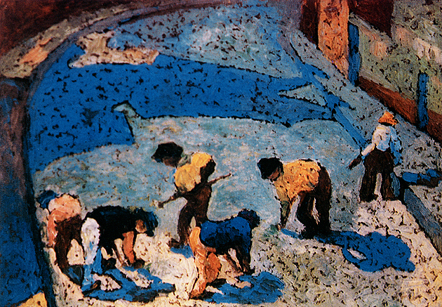

- Título
- A Sombra
- Ano
- 1922
- Artista
- Zina Aita
- Técnica
- óleo sobre tela, combinado com elementos que remetem ao divisionismo e a toques de aquarela.
- Local
- foi exibida, no Theatro Municipal de São Paulo.
- História
- A pintura "A Sombra", também registrada historicamente como Homens Trabalhando ou Petrópolis, foi criada em 1922 pela artista mineira Zina Aita logo após o seu retorno de uma temporada de estudos na Itália. Inspirada por trabalhadores braçais curvados sobre o solo na cidade de Petrópolis, no Rio de Janeiro, a obra utiliza cores fortes e formas expressivas que misturam o pós-impressionismo europeu com a temática social brasileira, destacando o impacto visual das silhuetas projetadas no chão. No mesmo ano de sua criação, a tela ganhou relevância nacional ao ser selecionada para a histórica Semana de Arte Moderna de 1922, figurando no catálogo oficial do evento no Teatro Municipal de São Paulo sob o título de Petrópolis. No entanto, o destino da pintura e de sua criadora tomou rumos de apagamento nas décadas seguintes, já que Zina Aita se mudou em definitivo para a Itália para trabalhar com cerâmica, distanciando-se do circuito artístico brasileiro. Por muito tempo negligenciada pela historiografia tradicional do modernismo, a obra passou por um importante resgate crítico recente, sendo hoje reconhecida como uma peça vanguardista fundamental e um marco da representação do operariado na exposição de 1922.